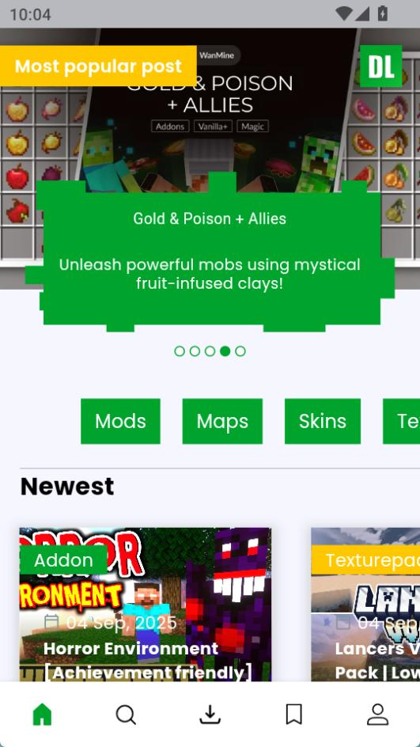
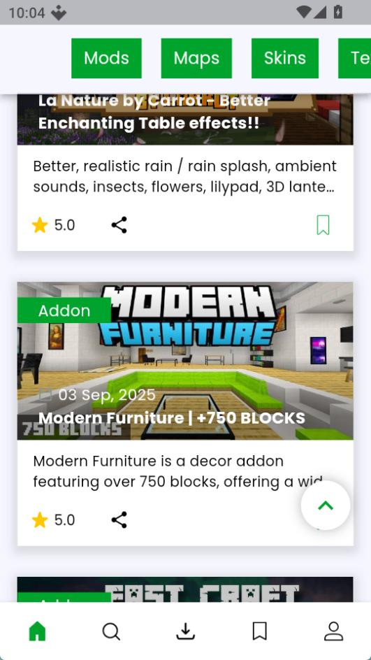

第一次玩 Minecraft 手机版怎么装内容？MCPEDL 带你五分钟上手
刚入坑基岩版不知道去哪找 addon、材质包和地图？这篇从下载安装到第一次导入一路带路，零基础也能跑通。
这篇能带你从完全不懂到用起来，不需要任何基础——连"基岩版"是什么都不用提前知道，跟着点就行。
它到底是干嘛的
想象一下你买了个空手机壳，里面只有系统自带的几个 App，想装微信、抖音、美图秀秀……就得去应用商店。mcpedl官网就是 Minecraft 手机版的专属"应用商店"——只不过它不卖 App，卖的是给游戏加内容的各种包：有换贴图的、有加新怪物的、有整个做好的地图、还有皮肤。

MCPEDL 这个名字背后有来头。它最早是 2014 年上线的一个社区网站 mcpedl.com，专门收录 Minecraft 便携版（后来改名基岩版）的玩家自制内容，一切免费。2021 年被游戏平台公司 Overwolf 收购，2023 年推出了手机应用，把网站上的内容直接搬到了手机上——现在你在 App 里点的就是网站那一套内容体系。它和 Minecraft 官方没有隶属关系，是第三方社区生态，但内容质量和数量都是基岩版里数一数二的。
五分钟上手：从安装到第一次导入
最短路径其实就四步，全程不用进游戏设置瞎翻：
第一步，装 MCPEDL。 从官方下载拿安装包，安卓和 iOS 商店里也能搜到"MCPE DL for Minecraft"。装完打开，会让你选语言和偏好的内容分类，随便勾几个，后面随时能改。
第二步，挑一个你想要的内容。 首页就是推荐流，也可以点底部的分类标签——Addons（功能扩展）、Texture Packs（材质包，换画质的）、Maps（整个做好的地图存档）、Skins（皮肤）。新手建议先从材质包下手，效果最直观、出问题概率最低。

第三步，点下载。 进了内容详情页，右下角有个显眼的下载按钮，点一下等几秒就行。下载完成后会自动跳转到 Downloads 标签，里面有一个完成的条目。
第四步，导入 Minecraft。 在已完成的条目上点下载图标（不是重新下载，是触发打开动作），系统会弹出"选择打开方式"，选 Minecraft。游戏会自动拉起，屏幕上方先出现 Import started...，伴随一声提示音，几秒钟后变成 Successfully imported——这就进游戏了。
这里有个坑要避开：别自己进手机文件管理器翻出那个文件再点开，十有八九会遇到"打开方式列表里没有 Minecraft"或者点开没反应。就从 MCPEDL 的 Downloads 标签发起，走系统直达通道，最稳。
导入成功不代表已经在游戏里生效——材质包要进世界设置里激活，地图会自动出现在世界列表里，皮肤进更衣室。这个我们稍后说。
上手后先玩这三个功能
材质包换肤、addon 扩展、地图——这是新手最值得先碰的三个方向，每个都能在五分钟内看到具体变化。
先换个材质包，眼睛先舒服起来
材质包（Texture Pack）只改一件事：方块、物品、界面看起来什么样。不动游戏行为，不生成新内容——这也是它最适合新手的原因，导入激活立刻见效果，不喜欢随时换回来。
挑材质包的时候你会看到一堆 x16、x32、x64、x128 的标签，这指的是贴图的单面像素数。简单记就行：x16 是原版画质几乎无压力，x32 略精细适合中低端机，x64 明显精细适合中端机，x128 接近高清贴图只有旗舰机扛得住。如果你的手机是两三年前的千元机，老老实实选 x32 以下的，发热掉帧的体验很糟心。
激活方式分两种：单个世界生效就进那个世界的设置，找到"资源包"选项激活；想让所有世界都用这个材质，就去游戏设置里找"全局资源"（Global Resources）开关。两种方式都随时可以切换。
加一个 addon，给游戏加点新花样
Addon 是功能扩展包——能加新的怪物、新的道具、新的合成配方，甚至改变游戏规则。比如有人做了个"宠物模组"，能让你驯服各种小动物跟在身后；还有人做了个"家具包"，加了沙发、电视、餐桌，让你建的房子像回事。
Addon 比材质包复杂一点，因为它涉及游戏行为的改变，所以不同 addon 之间可能互相冲突。新手建议一次只装一个 addon，观察有没有问题再加下一个。如果装了发现没效果，先检查版本对不对——有些 addon 只支持特定的 Minecraft 版本，版本不匹配会静默失败，具体排查步骤可以去mcpedl文档里看。
下个现成地图，省得自己从零搭
Maps 分类里全是玩家做好的存档——有精心搭建的城堡、有跑酷地图、有解谜小游戏、有整座城市。下载导入后，地图会直接出现在 Minecraft 的世界列表里，点进去就能玩，不用自己从零开始搭。
对于完全不会建造的新手来说，先玩几个现成地图是最快的学习方式——你能看到别人是怎么规划空间、怎么用方块、怎么做装饰的，玩完再自己动手，手感好很多。
小白的三个常见疑问
"Failed to import" 导入失败怎么办？
这是最常遇到的问题，而且 Minecraft 不给原因，就说"导入失败"。别急，按命中率从高到低试三步：
- 先重启游戏——把 Minecraft 彻底杀掉重开，再导一次。有时候游戏在后台挂久了进程状态会乱，重启就能解决。
- 看看是不是包本身坏了——去内容页面的评论区翻一下，如果近期好几个人都在说导入失败，那大概率是作者发布时就缺了清单文件（manifest），换一个候选就行。评论区没人说失败但你还是不行，那大概率是你下载时文件损坏了，回 MCPEDL 重新下载一次。
- 检查游戏版本——有些内容要求特定的 Minecraft 版本，版本低于要求也会静默失败。去应用商店把 Minecraft 升最新版再试。
MCPEDL 是官方的吗？会不会被封号？
不是。MCPEDL 由 Overwolf 开发运营，和 Mojang（Minecraft 的开发商）没有隶属关系。但它是基岩版社区里最正规的内容聚合平台之一，里面的 addon 和材质包都是通过游戏官方允许的 mod 接口实现的，正常使用不会被封号——只要别去装那种绕过游戏安全机制的可疑内容就行。
装了之后游戏变得特别卡、发热严重？
八成是你选了 x128 甚至更高分辨率的材质包。高清贴图对手机 GPU 的压力非常大，尤其是安卓中端机，发热降频后帧率会掉到十几帧，根本没法玩。换回 x32 或 x16 的材质包问题就消失了。另外同时装多个大体积 addon 也会叠加性能消耗，精简一下。
总之，MCPEDL 就是给 Minecraft 手机版"装插件"的一站式入口——找内容、下载、导入，四步搞定。别一开始就想装最复杂的包，先从一个 x32 材质包开始，看到画质变化的那一刻，你就明白为什么这么多人沉迷给基岩版装内容了。进阶的话可以试试同时装几个互补的 addon，或者自己动手改材质包的纹理，上手不难。
这套资料在三个仓库都有备份：GitHub 的主仓库是更新源，Gitee 的镜像和 GitCode 的镜像各有一份同步，国内网络访问不稳时换着看就行。